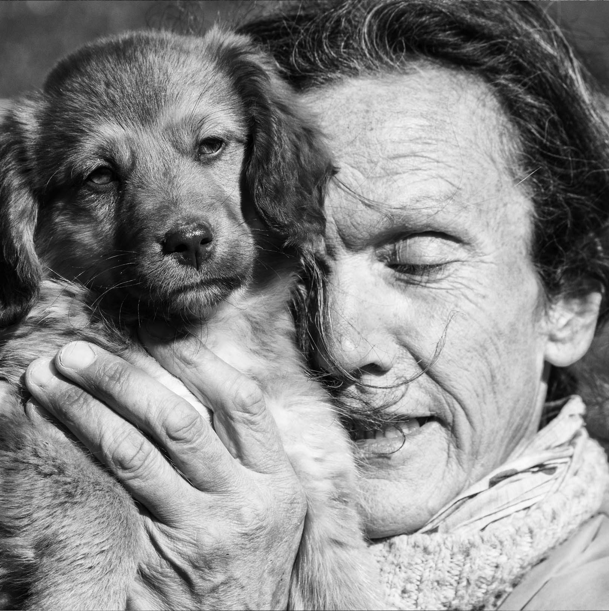
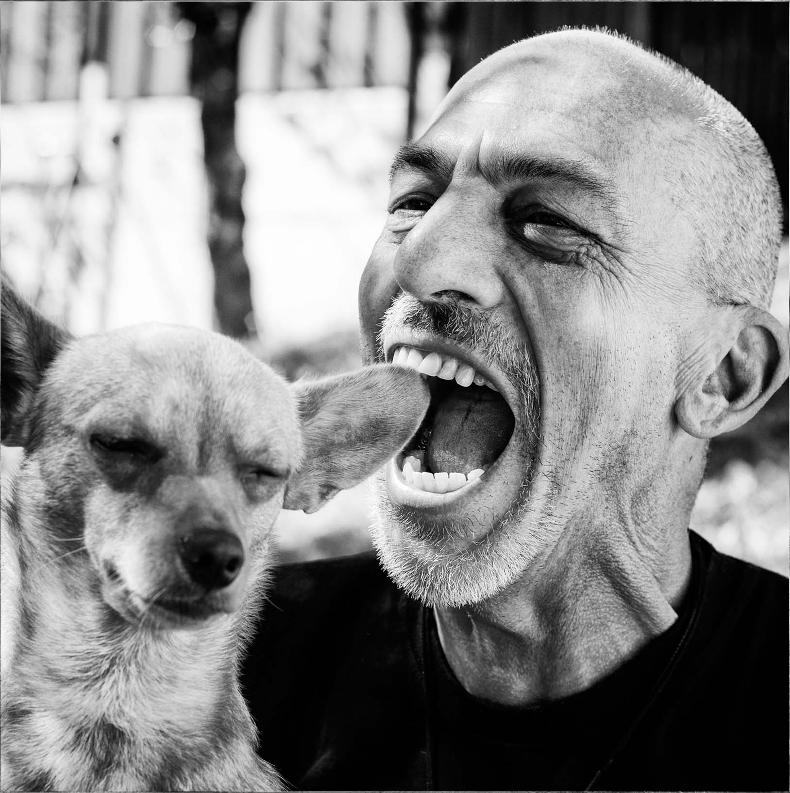
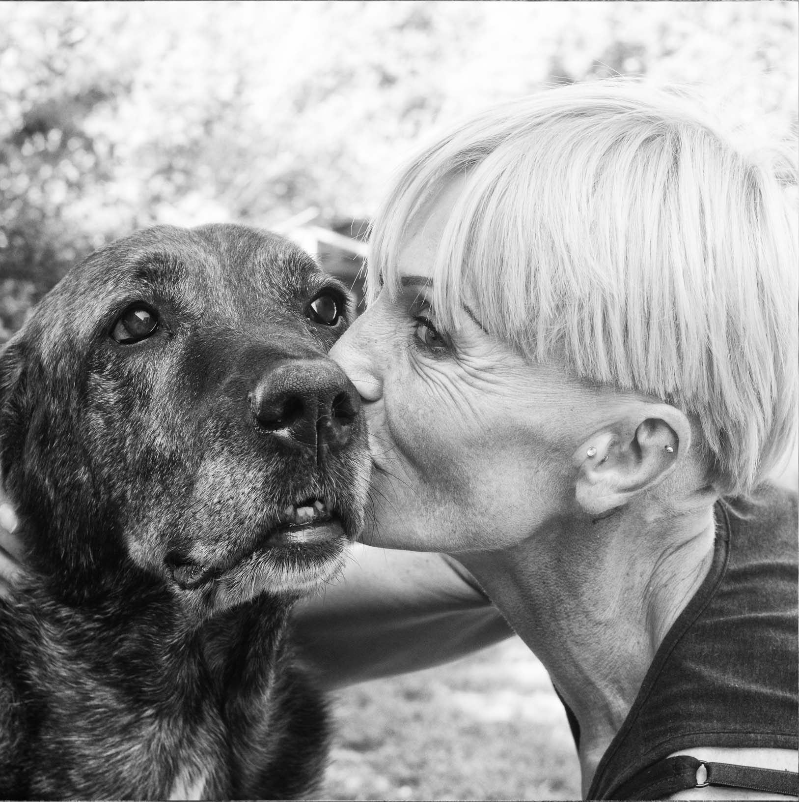

Estela
Más de 30 años de amplia experiencia en el cuidado y enseñanza avalan su trayectoria.
Eduardo
Paciencia y dedicación son dos atributos que definen perfectamente su personalidad, y que se traducen luego en los notables resultados de su trabajo.



Hugo
La alegría en la enseñanza es su mayor virtud, siendo su lema ''con una sonrisa el aprendizaje se potencia''.

Elvira
Amante de los perros desde su niñez, enseñar a través del amor y el afecto son su principal herramienta de trabajo.
Ricardo
Más de 20 años de experiencia en la educación, corrección y modificación de las malas conductas.
Miriam
''El castigo no debería ser el arma cuando se desea reprimir la mala conducta, los premios cuando se logran los objetivos sí''.